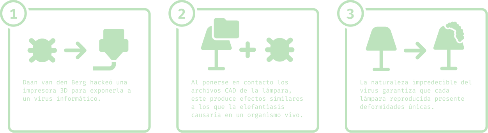

Merrick Lamp: Estética del error en la era del diseño digital

Merrick Lamp
Daan Van den Berg
Daan van den Berg se inspiró en el término "virus" y la versatilidad de este, ya que, puede referirse al agente infeccioso que ataca el cuerpo humano o en este caso, al malware que infecta computadores. Este término lo llevó a rediseñar una lámpara de IKEA de una forma única ; hackeando una impresora 3D para exponerla a un virus que mutaría el diseño CAD de esta y generaría un efecto en el mecanismo igual al que la filariasis linfática produce en el cuerpo humano. Cada lámpara producida es distinta a la anterior por la naturaleza impredecible del virus , creando así un producto con deformidades única, que recuerdan las aflicciones físicas de las mutaciones biológicas.


CONTEXTO
¿Qué significa el término hackear?
Hackear se refiere a la explotación de vulnerabilidades en las redes y sistemas informáticos de una organización para obtener acceso no autorizado u obtener el control de los archivos digitales. Estas actividades implican el identificar debilidades en un sistema o red informáticos y explorar y manipular la información con intenciones malévolas o con motivos egoístas.
Usualmente, el hackeo es conocido como un acto con intenciones malévolas, pero en este caso Daan van den Berg lo utiliza como acto de terrorismo estético, críticando los productos homogéneos y la producción en serie idéntica, representativo de la industrialización moderna.
Design Hacking
Este hackeo, cuando es implementado en el diseño, tiene como víctima a los consumidores, pero en el caso de la Merrick lamp, el hackeo afecta la producción y no el consumo. Como se dijo anteriormente, cada producto sería único y diferente, no afectando la calidad (ya dudosa) de los productos de IKEA, sino, su estética y replicabilidad. Como dice la Revista de los Estudios de Ciencia de la Información y de la Comunicación
Hablamos de una figura política que crea o modifica pensando más allá del bien personal. El hacker trabaja desde el inicio con el análisis de lo que ya está diseñado, lo mejora y comparte la experiencia con otras personas desde una perspectiva de transparencia del conocimiento. (2014)
Así, Van den Berg muestra su actitud transformadora de las herramientas ya existentes, sugiriendo que la violencia y el azar pueden ser fuerzas creativas que enriquecen el campo del diseño al expandir sus límites más allá del dogma de la "amabilidad" y la perfección.

DIAGRAMA DEL PROCESO

REFLEXIÓN DESDE EL DISEÑO
¿Qué perdemos cuando aceptamos sin cuestionar la producción masiva y uniforme?
La industrialización nos prometió eficiencia y accesibilidad, pero eso trajo un costo, que es eliminar la
diversidad, el carácter y la historia detrás de los objetos, cualidades que iban de la mano con el ser
humano y sus vivencias. Ahora todo luce igual, todo es reemplazable fácilmente, nada tiene vínculo
emocional ni mucho menos se trata de que perdure en el tiempo, se volvió un proceso casi tan instantáneo
que hasta su vida útil lo terminó siendo.
Esta crítica, nos resuena como grupo, porque
la estandarización extrema nos aleja de la creatividad, la personalización y la relación afectiva con los
objetos.
Nos reduce a consumidores pasivos de formas prefabricadas.
La Merrick Lamp, en cambio, nos
invita a imaginar otro camino:
Objetos que evolucionan.
Producción digital que permite lo único,
no solo la copia.
Tecnología usada no para uniformar, sino para reintroducir la singularidad.